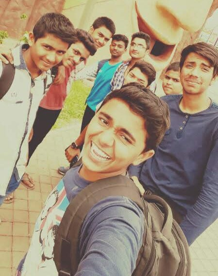
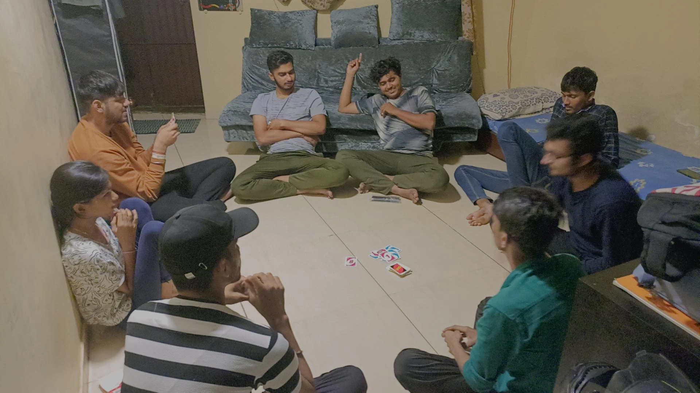
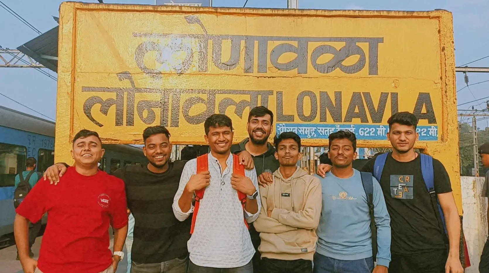

Meet the homies
So welome everyone to this page which is all about my friends. It all started when my mother
got me into a catholic school thinking i'll be able to learn english from childhood (even you know for Middle class Family how important
is to learn English.) Let me give you a hint i didn't learn english until 20 of my age (started to watch english movies to impress my
crush.) But as my mother got me into this school i met few people who became best part of my life. I'll introduce you to them
shortly no need to worry.


So i have 7 people in my group, Praveen, Pankaj, Sanskar, Shivanshu, Rushikesh & Sanskar, You might be thinking we are very cute and all,
but we are not! All the people you see in those photos are only cute and calm when we are with each other otherwise we are someone you
should not mess with. Even in school we were backbenchers but only different thing about this is we were good in studies, Dance, Sports You
name it. Now we all are atleast friends for 16 years and we meet each sunday we play cricket and UNO now, you guess where do we play and with
whom we play. We play at out school and with our principle. As i said to you we were good in all departments we save our principles reputation
a lot of time. Hence we have good relation with our principle and thus we play with him regularly. And now as the rainy season
started we will be doing lot of Trekking and we also have plans of visiting Bhimashankar, hopefully we will do that soon. Recently we went to
theme park Wet and Joy.

 One of the fondest memories tht i recall with my boys is once when we were in standard tenth we did something horrible due to which they
started interrogating entire class but none of them said anything about who did it that was the unity of our entire class and apart from it
half if the boys in this photos had crush on the same girl. To be honest my entire school had crush on the same girl some moved on some didn't
me and one of My friend named Shivanshu, we didn't moved on from that girl for long period of our life we both used to discuss strategy of how we can
pull her, but those strategy didn't worked. But still we enjoyed a lot. And if someday sometime destiny tells me that you can relive those
glorious days just you have to give all the money you have, it won't take single second me to do it. But good thing about my life is we all are still
together atleast every saturday and sunday if not everyday. Looking for next weekend. signing off, see yaaa!!!
One of the fondest memories tht i recall with my boys is once when we were in standard tenth we did something horrible due to which they
started interrogating entire class but none of them said anything about who did it that was the unity of our entire class and apart from it
half if the boys in this photos had crush on the same girl. To be honest my entire school had crush on the same girl some moved on some didn't
me and one of My friend named Shivanshu, we didn't moved on from that girl for long period of our life we both used to discuss strategy of how we can
pull her, but those strategy didn't worked. But still we enjoyed a lot. And if someday sometime destiny tells me that you can relive those
glorious days just you have to give all the money you have, it won't take single second me to do it. But good thing about my life is we all are still
together atleast every saturday and sunday if not everyday. Looking for next weekend. signing off, see yaaa!!!